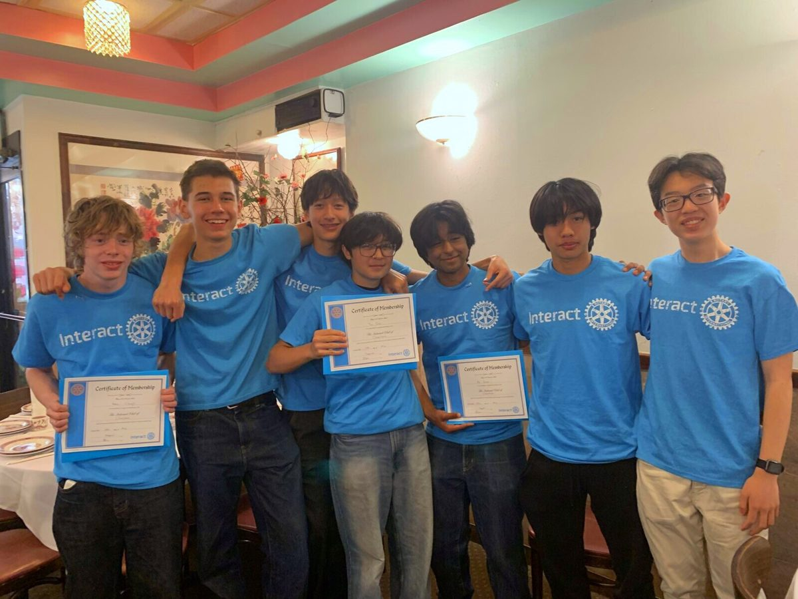

New membersSecond pinning ceremony
Over lunch at Hop Lee, we pinned four new members — each receiving the Interact pin and a Certificate of Membership in front of the club and our sponsoring Rotarians.
4 members pinned
Read more